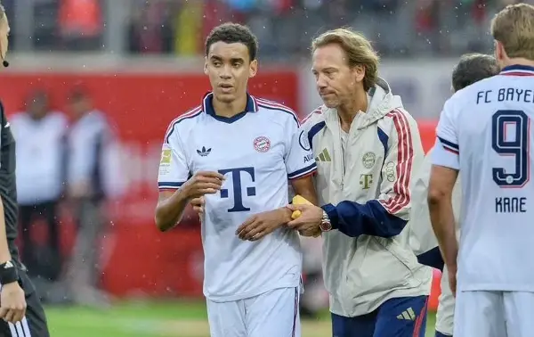

Најнови вести – Страница 27 | DAY.mk
Со што се занимавала Карен Рид пред да се соочи со две судења за убиство?
Планот отсекогаш ни беше прво да си го спасам сопствениот живот“, изјави Рид при гостувањето во емисијата „Тудеј“ на 5 јуни 2026 година.
Грипот расте, вакцинацијата доцни за дел од ризичните: што покажуваат последните податоци
Бројот на пријавени случаи на грип и заболувања слични на грип во Македонија повторно расте.

Мусијала повторно се повреди!
Германскиот репрезентативец беше на медицински прегледи, а клубот објави дека ќе биде надвор од терените на неопределено време. Затоа, германскиот репрезентативец ќе биде надвор...
„БОМБА“: Нико Паз не сака во Реал?! Желба му е гигант од Премиер-лига!
Фудбалерот на Комо игра совршено оваа сезона, покажува дека има зрелост за најсилните клубови во светот, но е смирен и не размислува премногу. Нико Паз ќе биде најинтересниот фу...
Во деновите од викендот времето ќе биде облачно и врнежливо
Поради продор на постуден воздух од север врнежите ќе бидат од дожд и снег во некои од пониските, а на повисоките места и на планините од снег. Времето денеска ќе биде облачно с...
Ограбена златарница во центарот на Куманово
Секој што наутро го отвора својот дуќан има право да се чувствува безбедно на своето работно место, порача претседателот на комората – изразувајќи солидарност со семејството на ...
Денес роденден слави Сашко Коцев – еден од најпрепознатливите и најистакнатите македонски актери
За својата работа има добиено бројни признанија, меѓу кои наградата за најдобар актер на МТФ „Војдан Чернодрински“ во 2018 година за улогата во претставата „Ничија земја“, како ...
Марго облеана во крв: што откриваат актерките за неизвесниот крај на втората сезона на „The Hunting Wives“
Втората сезона на „The Hunting Wives“ завршува без одговор за судбината на Марго.
Зимата на шини: од снежна Анадолија до божиќните пазари во Минхен
Од Анкара до Карс, преку снегот на источна Турција, или од Рим преку Алпите кон Минхен.
Крај на печатењето пари за државата: Милеи спроведе реформа во Аргентина
Законот претставува еден вид пресврт во однос на изборната кампања на Милеи, како кандидат во 2023 година, тој вети дека ќе ја укине централната банка и ќе го замени пезосот со ...
Најнови Вести